Практичні курси · журнал «ДентАрт» 2022 №1
Міждисциплінарний підхід до лікування одонтогенних верхньощелепних синуситів
Interdisciplinary approach to the treatment of odontogenic maxillary sinusitis
Тісний анатомічний зв’язок зубів верхніх щелеп з верхньощелепними синусами може призводити до того, що одонтогенні інфекції впливають на структури щелепи і призводять до виникнення синуситу.
Синусит – це запалення слизової оболонки однієї чи кількох додаткових пазух носа. Запалення всіх приносових пазух називається пансинуситом. Для лікарів-стоматологів та оториноларингологів актуальне розуміння причин виникнення та розвитку верхньощелепних синуситів (гайморитів). Це зумовлено анатомічною близькістю коренів верхніх молярів і премолярів (дуже рідко іклів) і дна верхньощелепної пазухи при пневматичному типі її будови. Пневматизація пазухи може бути такою великою, що корені зубів розміщені безпосередньо у верхньощелепному синусі і покриті лише мембраною Шнайдера (фото 1, 2).
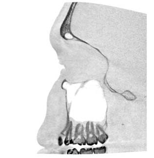
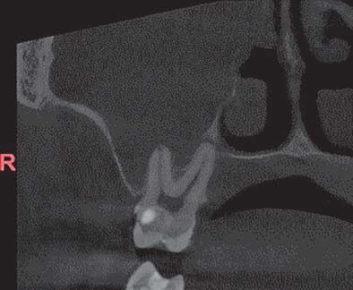
Гайморит належить до захворювань багатофакторної етіології, але при пневматичному типі будови гайморової пазухи патологічні процеси в бічних зубах верхньої щелепи і навколо них можуть призводити до виникнення одонтогенних верхньощелепних синуситів.
За даними різних авторів, частота виникнення одонтогенних гайморитів у різних випадках суттєво відрізняється. Також значно відрізняються і статистичні дані ЛОР-клінік та щелепно-лицьових стаціонарів. Так, за даними ЛОР-клінік, частота виникнення одонтогенних гайморитів коливається від незначних 2% до 25% усіх верхньощелепних синуситів. Статистичні дані щелепно-лицьових стаціонарів вказують на велику частоту виникнення цього захворювання – від 5 до 40,6%. Такі суттєві відмінності зумовлені передусім тим, що оториноларингологи не мають технічної можливості обстежити стан твердих тканин зубів, навколозубних тканин, виміряти глибину пародонтальних кишень та провести тести на вітальність пульпи зубів. Одонтогенну етіологію процесу часто починають підозрювати лише після кількох невдалих спроб антибіотикотерапії.
Також у ЛОР-клініках для діагностики гайморитів досі широко використовується оглядова рентгенографія обличчя у напіваксіальній проєкції (фото 3). Недоліком такого способу радіологічного дослідження є нашарування різних анатомічних утворень (вилицева кістка, її гребінь, нижній край орбіти, альвеолярний відросток, зуби та ін.) на проєкцію верхньощелепного синуса. Діагностувати одонтогенний гайморит, а тим більше встановити причинний зуб за допомогою такого радіодослідження неможливо.
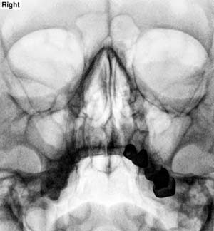
Золотим стандартом радіологічного дослідження при підозрі на верхньощелепний синусит є лише конусно-променева комп’ютерна томографія (КПКТ). Цей спосіб дослідження дозволяє вивчити будь-який об’єкт ділянки сканування під будь-яким кутом на будь-якій глибині у всіх площинах, що виключає утворення сумарного зображення (як на двовимірних знімках), де всі об’ємні деталі накладаються одна на одну. КПКТ дозволяє провести дослідження зрізу тканин товщиною від 0,08 мм, який може бути прокреслений у довільно вибраному місці без проєкційного спотворення об’єкта дослідження за розміром та конфігурацією (фото 4).
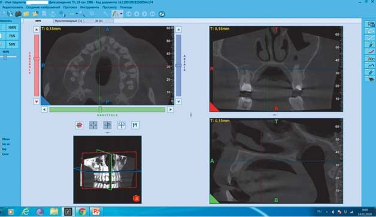
Незважаючи на те, що на сьогодні існує велика кількість ендоскопічних методів діагностики та лікування верхньощелепних синуситів – FESS (Functional Endoscopic Sinus Surgery), досі основним методом лікування одонтогенного гаймориту є хірургічний, найчастіше це операція за Колдуеллом – Люком, яка, на нашу думку, дуже травматична. Після такого оперативного втручання часто виникають післяопераційні ускладнення, такі як часткова або повна облітерація гайморової пазухи рубцевою тканиною, западіння та ущемлення м’яких тканин і нервових гілок у кістковому дефекті, штучне створення з’єднання з нижнім носовим ходом, яке не є функціональним. Також досить часто виникають порушення чутливості зубів, шкіри верхньої губи, крил носа і просто рецидив захворювання. Іноді зустрічається загибель пульпи в зубах, у проєкції верхівок яких робився доступ до синуса, а також травмуються корені інтактних зубів (фото 5).
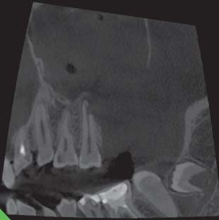
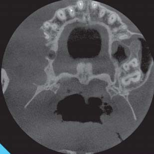
При лікуванні одонтогенних верхньощелепних синуситів широко застосовується протимікробна терапія як при консервативному лікуванні, так і в комплексі з хірургічними втручаннями. Але будь-які способи лікування без усунення етіологічного фактора будуть марними.
Таким чином, залишаються актуальними розробка і використання малоінвазивних, атравматичних методів діагностики та підходів до лікування цієї патології. Верхньощелепні синусити за походженням можуть бути: риногенними; одонтогенними; гематогенними.
Г. Н. Марченко виділяє закриті та відкриті форми одонтогенних гайморитів. До закритих гайморитів належать запалення, які виникають на основі періодонтитів, і нагноєння одонтогенних кіст, що вросли в пазуху. Відкриті форми розвиваються на тлі перфоративних синуситів (наприклад, перфорація мембрани Шнайдера при видаленні зубів або синус-ліфтингу) і як ускладнення в результаті остеомієліту альвеолярного відростка або тіла щелепи. Ця класифікація дозволяє зрозуміти, що стає причиною виникнення синуситів, але не позбавлена недоліків. Наприклад, до якої форми віднести гайморит, що виник при ендодонтичному втручанні, під час якого відбулася перфорація мембрани Шнайдера механічним інструментом або гіпохлоритом натрію? Також існують дослідження, які вказують на те, що радикулярні кісти ніколи не вростають у гайморову пазуху, а збільшуючись, відтісняють мембрану у вигляді купола (фото 6, 7). У такому разі оперативне втручання в синусі недоцільне.
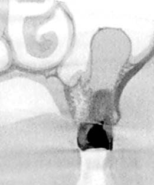
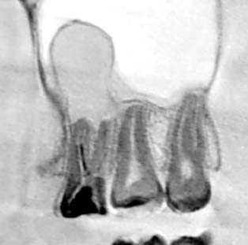
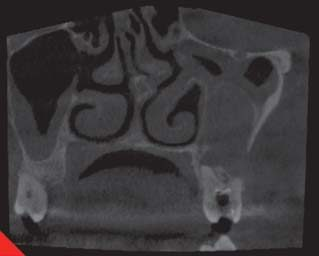
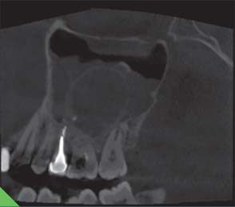
За морфологією виділяють катаральні, гнійні, поліпозні, гнійно-поліпозні і пристінково-гіперпластичні верхньощелепні синусити (Шаргородський О. Г., 2001).
У 51,8% випадків причиною виникнення одонтогенних синуситів стає хронічний періодонтит зубів верхньої щелепи, у 4,3% – радикулярні кісти, 27,2% – перфорація дна гайморової пазухи, 1,2% – ретиновані зуби та у 15,5% – сторонні тіла (фото 8). Деякі автори вказують на велику частоту кіст верхньощелепного синуса – від 8 до 18%.
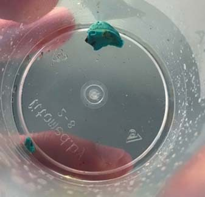
У цих статистичних даних не враховані синусити, що виникають внаслідок тяжкого пародонтиту (фото 9), невдалого синус-ліфтінгу та ускладнень після імплантації (фото 10).
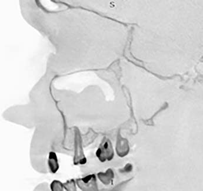
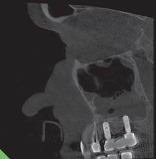
О. М. Солнцев (1970) вважає, що одонтогенні гайморити найчастіше є первинно-хронічними, гострі одонтогенні гайморити або не зустрічаються взагалі, або дуже рідко. На його думку, можливість первинно-хронічного запалення – одна з характерних рис одонтогенного гаймориту. Пояснити це можна тим, що більшість одонтогенних гайморитів із самого початку мають такий перебіг, як хронічне запалення (Г. В. Кручинський і В. І. Філіпенко, 1994). Але й донині це питання залишається невирішеним, хоча немає сумнівів у тому, що характерною особливістю верхньощелепних одонтогенних синуситів є можливість виникнення первинно-хронічного процесу без попередньої стадії гострого запалення.
Збудниками одонтогенного гаймориту є різні мікроорганізми, що вегетуються в одонтогенних та стоматогенних осередках інфекції. При цьому монокультура висівається лише у 19,2% випадків, у інших 80,8% флора представлена асоціаціями мікроорганізмів. За даними різних авторів, флора може бути дуже різноманітною і представленою паличками і коками, як грампозитивною, так і грамнегативною, як аеробною, так і анаеробною. Зазвичай співвідношення грампозитивних мікроорганізмів до грамнегативних у виділених культурах 3:1. За частотою висіву провідні позиції посідають сімейства Streptococcaceae роду Streptococcus. Але майже завжди флора при синуситах полімікробна і містить не менше 2-3 видів мікроорганізмів.
Приблизно у 60-65% випадків одонтогенні гайморити викликаються анаеробною мікрофлорою, переважно Peptostreptococcus, Prevotella spp., Semella morbillorum, Streptococcus constellatus, Streptococcus intermedius та mitis, Actinomyces israeli. Передусім це зумовлено тим, що в синус потрапляють мікроорганізми із системи кореневих каналів, які здебільшого є анаеробами. Аеробна флора (~35-40%) найчастіше представлена Staphylococcus aureus, Streptococcus pneumoniaе, Klebsiella pneumoniae, Hemophilus influenza, Moraxella catarrhalis.
Дані літератури вказують на те, що в деяких випадках при дослідженнях не виявляють росту мікроорганізмів, це можна пояснити застосуванням антибіотиків самим хворим до проведення дослідження.
У 60-ті роки з’явилися перші спостереження окремих випадків одонтогенних гайморитів, спричинених грибковою інфекцією, переважно цвілевими грибами Aspergillus. В останні два десятиріччя у світі відбувається зростання кількості грибкових уражень. У більшості випадків це пов’язано з явищами дисбактеріозу, який виникає під час тривалої, нераціональної і неконтрольованої антибіотикотерапії. Неправильна діагностика і недооцінка ролі грибкової інфекції у розвитку верхньощелепних синуситів призводять до неадекватної тактики лікування та невдалих результатів. Виділяють дві форми грибкового синуситу – інвазивну та неінвазивну.
У нашій практиці майже завжди зустрічається неінвазивна форма грибкового синуситу, етіологічним фактором якої є гриби роду Aspergillus (A. fumigatus, A. oryzae, A. flavus) або плісняві гриби Dematiaceous (Bipolaris, Drechslera, Alternaria, Curvulero). Гаряче або пересушене повітря (наприклад, кондиціонерами) є однією з ланок патогенезу цієї форми синуситу.
Fungus Ball (грибкове тіло) – найпоширеніша форма мікозу приносових пазух. У 90% випадків це захворювання викликається грибами роду Aspergillus, в інших випадках воно викликається іншими різновидами грибів, таких як Candida, Bipolaris та Alternaria. Крім аерогенного шляху потрапляння грибів у пазуху, існує й одонтогенний шлях через кореневі канали зубів, що відкриваються у гайморову пазуху. Досить часто пусковим моментом для розвитку грибів є потрапляння кореневих пломбувальних матеріалів у синус. Найчастіше таке ускладнення виникає за неконтрольованого введення пасти, при пломбуванні кореневих каналів за допомогою каналонаповнювача. Каталізують розвиток грибкової інфекції цинкоксидвмісні пломбувальні матеріали і гутаперча, а саме іони цинку, що містяться в них. Саме тому міцетома зазвичай має рентгенологічну густину, ідентичну металу.
Продуктами життєдіяльності грибів є солі кальцію, що також надає міцетомі рентгенологічної щільності. Рентгенологічна картина міцетом досить характерна – на тлі гомогенного або пристінкового зниження пневматизації пазухи визначаються конкременти діаметром від 3 мм, щільність яких вища за щільність кортикального шару кістки та зубної емалі (фото 11-13). Саме за рахунок великої рентгенологічної щільності Fungus Ball досить часто сприймають як стороннє тіло гайморової пазухи.
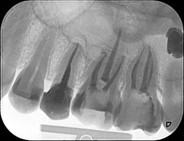
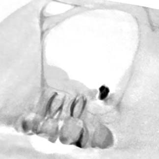
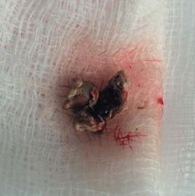
Верхньощелепні синусити, викликані міцетомами, неможливо пролікувати консервативно, лікування провадиться паралельно з хірургічним видаленням міцетоми. При неповному її видаленні та залишку навіть невеликої частки виникають рецидиви захворювання.
Найбільш ефективна тактика лікування одонтогенних верхньощелепних синуситів – паралельне лікування у стоматолога та отоларинголога, яке має передбачати усунення вогнища інфекції (ендодонтичне лікування причинного зуба або його видалення) та консервативне чи хірургічне втручання у ЛОР-лікаря. Виникає запитання: хто має лікувати таких пацієнтів першим – стоматолог чи отоларинголог? На нашу думку, це залежить від того, з якими скаргами звернувся пацієнт, чи одонтогенний синусит – це взагалі випадкове виявлення патології.
Якщо верхньощелепний синусит був виявлений у процесі стоматологічного втручання і у пацієнта немає ознак гострого запалення, то спочатку слід здійснити стоматологічне втручання, а потім, після усунення вогнища інфекції, – ЛОР-лікування. Якщо пацієнт звернувся з явищами гострого одонтогенного гаймориту, то насамперед ЛОР-лікар повинен усунути або значно зменшити запальний процес у синусі і лише потім робиться стоматологічне втручання. Часто лікування доводиться вести одночасно, наприклад у випадках, коли загострення хронічного періодонтиту викликало гострі явища в синусі.
З метою поліпшення результатів лікування і скорочення термінів реабілітації було розроблено багато способів. Один із таких способів передбачає трепанацію передньої стінки верхньощелепного синуса, через яку потім провадиться його активне промивання через два катетери. Через один з них подається антисептик, а через другий, приєднаний до слиновідсмоктувача, видаляється промивна рідина. Промивання роблять до одержання чистої промивної рідини. Дуже поширений спосіб пункції голкою Куликовського через нижній носовий хід. Якщо трепанаційний отвір було створено через передню стінку гайморової пазухи, надалі слід ушити слизову оболонку ротової порожнини в цій ділянці. Пункційний отвір через нижній носовий хід гоїться самостійно.
Як уже зазначалося вище, після оперативного втручання за Колдуеллом – Люком часто виникають порушення чутливості зубів, шкіри верхньої губи, крил носа і просто рецидив захворювання. Іноді виникає загибель пульпи в зубах, у проєкції верхівок яких робився доступ до синуса.
FESS (Functional Endoscopic Sinus Surgery) – найсучасніший спосіб оперативного втручання на приносових пазухах, у тому числі і на верхньощелепному синусі. Основною перевагою ендоскопічного хірургічного втручання є гарна візуалізація операційного поля та мінімальна травматичність процедури, що значно прискорює терміни загоєння післяопераційних ран і сприяє відновленню пацієнтів. Також FESS дозволяє уникати ускладнень, притаманних операції за Колдуеллом – Люком.
Консервативне лікування і хірургічні втручання передбачають застосування протимікробної терапії за програмою комплексного лікування. В ідеалі потрібно брати бактеріальні посіви вмісту синуса, визначати чутливість мікроорганізмів до антибіотиків і призначати препарати, до яких найбільше чутлива мікрофлора. Але це вимагає багато часу (кілька днів), тому, враховуючи мікрофлору, яка найчастіше міститься у пазухах при верхньощелепних синуситах, доцільно призначати найдієвіші протимікробні препарати – захищені пеніциліни (наприклад, Піперацилін-тазобактам), цефалоспорин та фторхінолони (Левофлоксацин, Гатифлоксацин, Моксифлоксацин).
Враховуючи той факт, що при лікуванні будь-якої форми одонтогенного гаймориту пацієнтам призначається курс лікування, який передбачає застосування антибіотиків загальної та місцевої дії, ризик виникнення дисбактеріозу досить великий. Тому при призначенні лікування слід враховувати можливість дисбактеріозу у пацієнта. Є дослідження, які доводять, що застосування пробіотиків (наприклад, «Лактовіт форте») всередину та пребіотичного засобу «Лізодент» у вигляді інсталяцій у верхньощелепний синус сприяє нормалізації загального стану, зменшенню набряку та ексудації на 2-3 дні раніше у порівнянні з традиційною схемою лікування. Слід зазначити, що прерогатива призначення протимікробної терапії належить ЛОР-лікареві.
При підозрі на одонтогенну етіологію верхньощелепного синуситу слід здійснити послідовне клінічне обстеження. У стоматолога воно має включати огляд ротової порожнини, при цьому особлива увага має звертатися на ступінь зруйнованості твердих тканин, дослідження глибини пародонтальних кишень (PSR-test) і проведення тесту на вітальність зубів (частіше холодовий тест або ЕОД).
При пневматичному типі будови верхньощелепного синуса, особливо коли корені зубів розташовані безпосередньо в ньому, за допомогою прицільної рентгенографії майже неможливо визначити цілісність кортикальної пластинки періодонтального простору. Крім того, часто при підозрі на незворотний пульпіт пацієнт не може точно вказати на причинний зуб. Тому тест на вітальність вкрай необхідний для визначення стану пульпи. Для диференціації болю при ураженні пульпи чи періодонта та неодонтогенного болю можна застосовувати вибіркове знеболювання або температурні тести.
При визначенні причинного зуба з пульпітним болем доцільно робити теплову пробу (доторкнутися гарячим інструментом, теплою водою або нагріти зуб гумовим поліром, який потрібно притиснути до вестибулярної поверхні зуба під час обертання). Відомо, що при деяких формах гострого пульпіту холод полегшує болючість, тому холодовий тест у таких ситуаціях не буде діагностично цінним.
З огляду на те, що причиною одонтогенного верхньощелепного синуситу можуть бути лише зуби з некротизованою пульпою, доцільно зробити холодовий тест за допомогою холодового спрею. Миттєвий і швидкоминучий біль, що виникає після нанесення холодового подразника за допомогою ватної кульки, свідчить про те, що пульпа в зубі вітальна, відтак цей зуб не може бути причинним. Доказом некрозу пульпи є відсутність болю в зубі на холодовий подразник. Наявність чи відсутність пародонтальних кишень визначається за допомогою пародонтального зонда. Зондування слід проводити з чотирьох поверхонь – мезіальної, дистальної, вестибулярної та оральної (PSR-тест).
Радикальне зменшення кількості мікроорганізмів у системі кореневих каналів – головний фактор успіху ендодонтичного лікування. Тому при лікуванні і після його завершення доступ мікроорганізмів до системи кореневих каналів має бути виключений. Під час лікування це забезпечується за допомогою ізоляції рабердамом, а після лікування – за рахунок герметичного відновлення коронкової частини зуба прямою або непрямою реставрацією. Перед ендодонтичним втручанням після знеболювання, створення ендодонтичного доступу (якщо зуб раніше не був лікований ендодонтично), видалення старої реставрації, усіх каріозних уражень обов’язково слід оцінити можливість відновлення зуба. За необхідності потрібно зробити попереднє тимчасове відновлення коронкової частини для проведення ендодонтичного втручання (pre-build-up). Відновлення коронки зуба можливе лише при збереженні ферула – залишкових твердих частин зуба. David Clark, John Khademi довели, що ферул-ефект (мінімальна наявність твердих тканин по периметру зуба заввишки 2 мм і завтовшки 1 мм) (рис. 1, фото 14) дозволяє довгостроково відновити коронкову частину зуба, а штифтові конструкції при цьому мають другорядне значення.
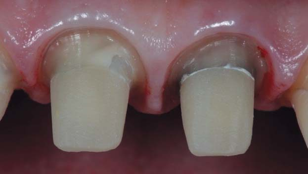
Рішення про збереження зуба та його ендодонтичне лікування ухвалюється лише після зняття штучних коронок (якщо вони є).
Пацієнти, котрі у гострій фазі процесу відчувають головний біль, біль у ділянці верхньої щелепи, мають утруднене носове дихання, серозно-гнійні виділення з носа, насамперед звертаються до отоларинголога. Після обстеження пацієнтів ЛОР-лікарем і першої допомоги цих пацієнтів направляють до стоматолога з метою виключення або підтвердження одонтогенної етіології синуситу. Надання першої допомоги має включати антимікробну, протинабрякову та протизапальну терапію.
При виявленні причинного зуба – етіологічного чинника одонтогенного гаймориту – паралельно з основним лікуванням слід провести ендодонтичне. Причинні зуби можуть бути раніше не лікованими або з уже лікованими раніше кореневими каналами (частіше). У будь-якому разі основне завдання ендодонтичного лікування – очищення системи кореневих каналів від путридних мас чи кореневих пломбувальних матеріалів, їх формування, дезінфекція, герметичне пломбування і встановлення герметичної реставрації, навіть якщо вона тимчасова.
За нашими спостереженнями, моляри бувають значно частішою причиною виникнення одонтогенних гайморитів. Найімовірніше, причиною цього є складніша анатомічна будова системи кореневих каналів, що ускладнює якісне ендодонтичне лікування. Майже у всіх випадках у раніше ендодонтично лікованих молярах, котрі є причиною одонтогенного синуситу, не було виявлено другого медіально-щічного кореневого каналу (MB2). Друга причина полягає в тому, що за статистикою моляри найчастіше і раніше, ніж інші зуби, уражаються карієсом. Це пов’язано з їх раннім прорізуванням, недостатньою мінералізацією і не завжди задовільною гігієною у дитячому віці.
Досить часто лише ендодонтичне лікування кореневих каналів веде до повного загоєння або значного зменшення запальних явищ у синусі (фото 15-17). Таким чином, консервативне ендодонтичне лікування у значній більшості випадків веде до повного клінічного та за радіологічними ознаками одужання. Зазвичай усі пацієнти, у яких спостерігалася позитивна динаміка в перші 6 місяців після ендодонтичного лікування причинних зубів зі значними осередками періапікальної деструкції, цілком одужали протягом 12 місяців після лікування.
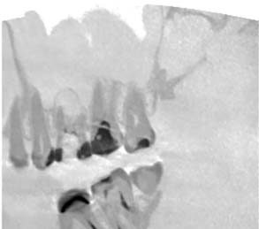
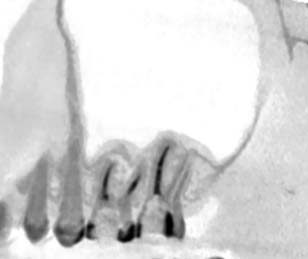
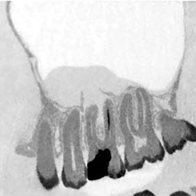
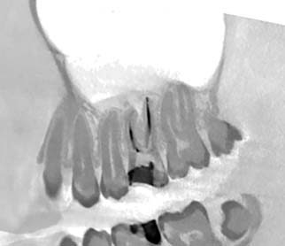
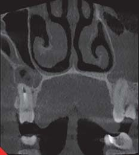
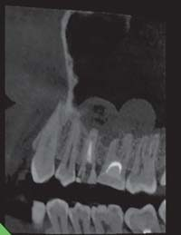
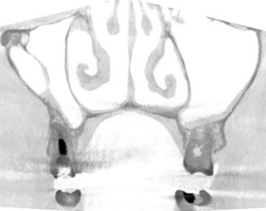
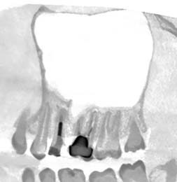
Іноді ендодонтичне лікування причинних зубів не веде до одужання пацієнта, і причини тут такі самі, як і причини невдалого ендодонтичного лікування: велика кількість залишкової органіки в кореневих каналах, наявність апікальних дельт, які неможливо інструментально обробити, неможливість герметично запечатати апекс кореня (особливо при резорбції кореня та його розташуванні безпосередньо в синусі) і наявність екстрарадикулярної біоплівки.
Висновки
Пацієнтам з підозрою на верхньощелепний одонтогенний синусит для встановлення остаточного діагнозу рекомендовані КПКТ придаткових пазух носа та обов’язковий тест на вітальність зубів, розташованих у безпосередній близькості до синуса, для визначення причинних зубів.
- При випадковому виявленні одонтогенного верхньощелепного синуситу під час КПКТ бажана консультація з ЛОР-лікарем.
- Якщо одонтогенний гайморит є «випадковою знахідкою» на стоматологічному прийомі, у більшості випадків для одужання достатньо провести лише ендодонтичне лікування причинних зубів.
- Пацієнтам із загостренням хронічного або гострим одонтогенним гайморитом передусім потрібне надання первинної допомоги ЛОР-лікарем (пункція, промивання пазух, призначення протизапальної терапії), а потім слід з’ясувати можливість консервативного лікування причинних зубів.
- Високий ступінь очищення системи кореневих каналів машинними ендодонтичними інструментами, їх тривимірна обтурація і герметичне пломбування дозволяють зберегти причинні зуби та отримати клінічне одужання (від 75% до 90,5% випадків).
- Висушування кореневих каналів після фінішної іригації слід робити за допомогою стерильних паперових пін, а при пломбуванні використовувати дезінфіковану гутаперчу, щоб зменшити ризик повторного інфікування системи кореневих каналів.
Література
- Oscar Arias-Irimia, Cristina Barona-Dorado, Juan A. Santos-Marino, Natalia Martinez-Rodriguez. Meta-analisis of the etiology of odonto- genic maxillary sinusitis. Med Oral Patol Oral Cir Bucal. 2010 Jan 1; 15 (1): 70–3.
- Regimantas Simuntis, Ri ardas Kubilius, Saulius Vaitkus. Odontogenic maxillary sinusitis: A review. Stomatologija, Baltic Dental and Maxillofacial Journal, 16:39–43, 2014.
- Lima C. O., Devito K. L., Vasconcelos L. R. B., Prado M., Campos C. N. Correlation between Endodontic Infection and Periodontal Disease and Their Association with Chronic Sinusitis: A Clinical- tomographic Study. J Endod. 2017; 43: 1978–1983.
- Brook I. Sinusitis of odontogenic origin. Otolaryngol Head Neck Surg 2006; 135:349–55.
- Wang K. L, Nichols B. G., Poetker D. M., Loehrl T. A. Odontogenic sinusitis: a case series studying diagnosis and management. Int Forum Allergy Rhinol. 2015; 5:597–601.
- Adelsona R. T., Adappa N. D. What is the proper role of oral antibi- otics in the treatment of patients with chronic sinusitis? Curr Opin Otolaryngol Head Neck Surg. 2013; 21: 61–68.
- Рогацкин Д. В. Радиодиагностика челюстно-лицевой области. Конусно-лучевая компьютерная томография. Основы визуализации. – ГалДент. – 2010. – 146 с.
- Kivan Kamburo lu. Use of dentomaxillofacial cone beam comput- ed tomography in dentistry. World J Radiol. 2015 Jun 28; 7(6): 128- 130.
- Пискунов И. С., Емельянова А. Н. Варианты анатомического строения верхнечелюстных пазух по данным рентгеновской компьютерной томографии // Российская ринология. – 2010. – № 2. – С. 16–19.
- Low W. K. Complications of the Caldwell-Luc operation and how to avoid them. Aust N Z J Surg 1995; 6: 582–4.
- Nemec S. F., Peloschek P., Koelblinger C., Mehrain S., Krestan C. R., Czerny C. Sinonasal imaging after Caldwell-Luc surgery: MDCT findings of an abandoned procedure in times of functional endoscop- ic sinus surgery. Eur J Radiol 2009; 70: 31–4.
- Ikeda K., Hirano K., Oshima T., Shimomura A., Suzuki H., Sunose H., et al. Comparison of complications between endoscopic sinus surgery and Caldwell-Luc operation. Tohoku J Exp Med 1996; 180: 27–31.
- Alvin Tang M. D., Brad Frazee. Antibiotic treatment for acute maxil- lary sinusitis. Annals of Emergency Medicine. November 2003. Volume 42, Issue 5, P. 705–708.
- Brook I. Microbiology of acute and chronic maxillary sinusitis asso- ciated with an odontogenic origin. Laryngoscope. 2005; 115: 823–5.
- Бактериальная обсемененность верхнечелюстной пазухи после радикального хирургического лечения / В. Т. Пальчун, А. И. Крюков, Н. Л. Кунельская [и др.] // Вестн. оториноларингологии. – 2004. – № 1. – С. 33–34.
- Bomelli S. R., Branstetter B. F., Ferguson B. F. Frequency of a den- tal source for acute maxillary sinusitis. Laryngoscope 2009; 119(3): 580–84.
- Rosenfeld R. M., Piccirillo J. F., Chandrasekhar S. S., et al. Clinical practice guideline (update): Adult sinusitis executive summary. Otolaryngol Head Neck Surg 2015; 152: 598–609.
- Soung Min Kim. Definition and management of odontogenic maxil- lary sinusitis. Maxillofac Plast Reconstr Surg. 2019 Dec; 41(1): 13.
- Tan B. K., Schleimer R. P., Kern R. C. Perspectives on the etiology of chronic rhinosinusitis. Curr Opin Otolaryngol Head Neck Surg. 2010; 18: 21–6. Практичні курси
- Kern R. C., Conley D. B., Walsh W., et al. Perspectives on the etio- logy of chronic rhinosinusitis: an immune barrier hypothesis. Am J Rhinol. 2008; 22: 549–59.
- Бускина А. В., Гербер В. Х. К вопросу о клинической классификации хронического одонтогенного гайморита. – Вест- ник оториноларингологии. – 2000. – № 2 – С. 20–22.
- Честникова С. Э. Консервативное и хирургическое лечение хронических одонтогенных перфоративных верхнечелюстных синуситов. – Автореф. дисс. канд. мед. наук. – Москва, 2008.
- Карпищенко С. А. Диагностика и лечение одонтогенных кист верхней челюсти / С. А. Карпищенко, М. А. Аль-Акмар, Ю. В. Иванов // Folia Otorhinolarryngologiae. – 2009. – № 2. – С. 12–28.
- Байдик О. Д., Сысолятин П. Г., Руденкских Н. В. Особенности структурных изменений слизистой оболочки верхнечелюстной пазухи при одонтогенных кистах // Институт стоматологии: Научно-практический журнал. – 2011. – № 3. – С. 86–87.
- Chandrasena F., Singh A., Visavadia B. G. Removal of a root from the maxillary sinus using functional endoscopic sinus surgery. Br J Oral Maxillofac Surg. 2010; 48: 558–559.
- Huang I. Y., Chen C. M., Chuang F. H. Caldwell-Luc procedure for retrieval of displaced root in the maxillary sinus. Oral Surg Oral Med Oral Pathol Oral Radiol Endod. 2011; 112: 59–63.
- Friedlich J., Rittenberg B. N. Endoscopically assisted Caldwell-Luc procedure for removal of a foreign body from the maxillary sinus. J Can Dent Assoc 2005; 71: 200–1.
- Лопатин А. С. Возможности эндоназальной эндоскопической хирургии в лечении кист верхнечелюстной пазухи / А. С. Ло- патин, В. С. Нефедов // Вестн. ОРЛ. – 2000. – № 4. – С. 11–16.
- Endoscopic treatment of maxillary sinus cyst // T. Hadar, R. Feinmesser, I. Lisnyansky, E. Yaniv // Harefuah. – 1994. – Vol. 127, № 10. – P. 378–380, 431.
- Лопатин A. C., Сысолятин С. П. Ринологические аспекты ден- тальной имплантации // Стоматология. – 2009. – № 1. – С.47–50.
- Dundar S., Karlidag T., Keles E. Endoscopic Removal of a Dental Implant from Maxillary Sinus. J Oral Implantol. 2017; 43: 228–231.
- Galindo P., Sa′nchez-Ferna′ndez E., Avila G., Cutando A., Fernandez J. E. Migration of implants into the maxillary sinus: Two clinical cases. Int J Oral Maxillofac Implants 2005; 20: 291–5.
- Сысолятин С. П. Одонтогенный верхнечелюстной синусит: вопросы этиологии // Вопросы челюстно-лицевой, пластической хирургии, имплантологии и клинической стоматологии. – 2010. – № 2-3. – С. 3–6.
- Davis L. J., Kita H. Pathogenesis of chronic rhinosinusitis: role of air- borne fungi and bacteria. Immunol Allergy Clin N Am. 2004; 24: 59–73.
- De Lima C. O., Devito K. L., Vasconselos L. R., et al. Correlation be- tween endodontic infection and periodontal disease and their asso- ciation with chronic sinusitis: A clinicaltomographic study. J Endod 2017; 43: 1978–83.
- Бактериальная обсемененность верхнечелюстной пазухи после радикального хирургического лечения / В. Т. Пальчун, А. И. Крюков, Н. Л. Кунельская [и др.] // Вестн. оториноларингологии. – 2004. – № 1. – С. 33–34.
- Brook I. Microbiology of Acute and Chronic Maxillary Sinusitis Associated with an Odontogenic Origin. Laryngoscope 115: May 2005: 823–825.
- Brook I. Microbiology and antimicrobial management of sinusitis. Otolaryngol Clin North Am 2004; 37: 253–266. 17
- Brook I. Microbiology and management of endodontic infections in children. J Clin Pediatr Dent 2003; 28: 13–17.
- Brook I., Frazier E. H., Gher M. E. Aerobic and anaerobic microbio- logy of periapical abscess. Oral Microbiol Immunol 1991; 6: 123–125.
- Хатыпова М. Г. Об анаэробной микрофлоре верхнечелюстных пазух у больных одонтогенными гайморитами и их чув- ствительности к антибиотикам / М. Г. Хатыпова // Новое в стоматологии. – 2003. – №2. – С. 67–69.
- Ryan E. Little, Christopher M. Long, Todd A. Loehrl, David M. Poetker. Odontogenic sinusitis: A review of the current literature. Laryngoscope Investig Otolaryngol. 2018 Apr; 3(2): 110–114.
- Fligny I., Lamas G., Rouhani F., Soudant J. Chronic maxillary sinusi- tis of dental origin and nasosinusal aspergillosis. How to manage in- trasinusal foreign bodies? Ann Otolaryngol Chir Cervicofac. 1991; 108: 465–8.
- Кунельская В. Я. Клиника, диагностика и лечение грибковых гайморитов / В. Я. Кунельская // Вестн. оториноларингологии. – 1970. – № 4. – С. 49–54.
- Дайхес И. А. Роль грибковой флоры в этиологии грибковых синуситов / И. А. Дайхес // Рос. ринология. – 2001. – № 2. – С. 178–179.
- Клименко И. Ю. Грибковые синуситы (клиника, диагностика, ле- чение) / И. Ю. Клименко, Л. С. Сенченко, Н. А. Флигинских // Х з’їзд оториноларингологів України. – Судак, 2005. – С. 112–113.
- Климов З. Т. Микозы ЛОР-органов: этиология, диагностика, ле- чение / З. Т. Климов // Ринологія. – 2003. – № 4. – С. 61–65.
- Damla Torul, Ezgi Yuceer, Mahmuts Sumer, Seda Gun. Maxillary si- nus aspergilloma of odontogenic origin: Report of 2 cases with cone- beam computed tomographic findings and review of the literature. Imaging Sci Dent. 2018 Jun; 48(2): 139–145.
- Beatriz Peral-Cagigal, Luis-Miguel Redondo-Gonza′lez, Alberto Verrier-Herna′ndez. Invasive maxillary sinus aspergillosis: A case re- port successfully treated with voriconazole and surgical debridement. J Clin Exp Dent. 2014 Oct; 6(4): 448–451.
- Fanucci E., Nezzo M., Neroni L., Montesani L. Diagnosis and treat- ment of paranasal sinus fungus ball of odontogenic origin: case re- port. Oral Implantol (Rome). 2013 Mar; 6(3): 63–66.
- Yoon Y. H., Xu J., Park S. K., Heo J. H., Kim Y. M, Rha K. S. A ret- rospective analysis of 538 sinonasal fungus ball cases treated at a single tertiary medical center in Korea (1996–2015). Int Forum Allergy Rhinol 2017; 7: 1070–1075.
- Grosjean P., Weber R. Fungus balls of the paranasal sinuses: a re- view. Eur Arch Otorhinolaryngol 2007; 264: 461–70.
- Costa F., Polini F., Zerman N., Robioni M., Toro C., Politi M. Surgical treatment of Aspergillus mycetomas of the maxillary sinus: Review of the literature. Oral Surg Oral Med Oral Pathol Oral Radiol Endod 2007; 103: 23–9.
- Fabio Costa, Enzo Emanueli, Leonardo Franz, Alessandro Tel. Fungus ball of the maxillary sinus: Retrospective study of 48 patients and review of the literature. American Journal of Otolaryngology. Volume 40, Issue 5; September – October 2019; 700–704.
- Andreas Naros, Jen Peter Petrs, Thorsten Bienger, Hannes Weise. Fungus Ball of the Maxillary Sinus – Modern Treatment by Osteoplastic Approach and Functional Endoscopic Sinus Surgery. Oral and Maxillofacial Surgery. March 2019. Volume 77, Issue 3, P. 546–554.
- Pietro Garofalo, Alessandro Griffa, Georges Dumas, Flavio Perottino. “Gauze Technique” in the Treatment of the Fungus Ball of the Maxillary Sinus: A Technique as Simple as It Is Effective. Int J Otolaryngol. 2016; 2016: 4169523.
- Dufour X., Kauffmann-Lacroix C., Ferrie J. C., Goujon J. M. Paranasal sinus fungus ball: epidemiology, clinical features and di- agnosis. A retrospective analysis of 173 cases from a single medical center in France, 1989–2002. Medical Mycology, Volume 44, Issue 1, February 2006, рр. 61–67.
- Joanna Leszczynska, Grazyna Stryjewska-Makush, Grazyna Lisowska, Bogdan Kolebacz, Marta Michalak-Kolarz. Fungal sinusi- tis among patients with chronic rhinosinusitis who underwent endo- scopic sinus surgery. Otolaryngol Pol 2018; 72 (4): 35–41.
- Боенко С. К. Одонтогенный гайморит: компетенция оторинола- ринголога или стоматолога? / С. К. Боенко, Е. В. Гавриш, Д. С. Боенко // Ринологія. – 2003. – № 3. – С. 37–40. 18
- Novak Vukoje and Dr Jon Garito. Puncture of the Maxillary Sinus: When, How and Why? Global Journal of Otolaryngology. Volume 17 Issue 1 – August 2018. P. 24–27.
- Benninger M. S., Appelbaum P. C., Denneny J C., Osguthorpe D. J., Stankiewicz J. A. Maxillary sinus puncture and culture in the diagno- sis of acute rhinosinusitis: the case for pursuing alternative culture methods. Otolaryngol Head Neck Surg. 2002 Jul; 127(1): 7–12.
- Капитанов Д. Н. Эндоназальные хирургические вмешательства на околоносовых пазухах: сравнение результатов различных методов / Д. Н. Капитанов // Рос. ринология. – 2000. – № 4. – С. 42–47.
- Low W. K. Complications of the Caldwell-Luc operation and how to avoid them/ W. K. Low// Aust N Z J Surg. 1995. – Vol. 65, № 8. – P. 582–584.
- Murray J. P. Complications after treatment of chronic maxillary sinus disease with Caldwell-Luc procedure. Laryngoscope. 1983 Mar; 93(3): 282–4.
- Andric M., Saranovic V., Drazic R., Brkovic B., Todorovic L. Functional endoscopic sinus surgery as an adjunctive treatment for closure of oroantral fistulae: a retrospective analysis. Oral Surg Oral Med Oral Pathol Oral Radiol Endod. 2010; 109: 510–6.
- Endoscopic treatment of maxillary sinus cyst // T. Hadar, R. Feinmesser, I. Lisnyansky, E. Yaniv // Harefuah. – 1994. – Vol. 127, № 10. – P. 378–380, 431.
- Chiapasco M., Felisati G., Zaniboni M., Pipolo C., Borloni R., Lozza P. The treatment of sinusitis following maxillary sinus grafting with the association of functional endoscopic sinus surgery (FESS) and an intra-oral approach. Clin Oral Implants Res. 2013 Jun; 24(6): 623–9.
- Можливості та переваги ендоскопічного методу в лікуванні запальних захворювань верхньощелепної пазухи / В. О. Маланчук , І. В. Федірко, В. І. Шербул, Р. І. Федірко // Ринологія. – 2011. – № 1. – C. 3–7.
- Боенко С. К. Послеоперационное лечение больных, перенесших эндоназальные эндоскопические операции, их осложнения и отдаленные результаты / С. К. Боенко, Д. С. Боенко// Ринологія. – 2003. – № 4. – С.10–13.
- Сединкин A. A. Рациональная фармакотерапия при эндохирур- гических операциях на верхнечелюстной пазухе и решетчатом лабиринте / A. A. Сединкин // Вестн. Оториноларингологии. 2004. – № 1. – С. 42–43.
- Лучшева Ю. В. Микробиологические аспекты рациональной ан- тибиотикотерапии в раннем послеоперационном периоде при хроническом гаймороэтмоидите и тонзиллите / Ю. В. Лучшева, В. Г. Истратова, В. Г. Жуховицкий // Вестн. оториноларинголо- гии. – 2004. – № 1. – С. 44–48.
- Justin Bailey, Jennifer Chang. Antibiotics for Acute Maxillary Sinusitis. Am Fam Physician. 2009 May 1;79(9):757–758.
- Хатыпова М. Г. Об анаэробной микрофлоре верхнечелюстных пазух у больных одонтогенными гайморитами и их чувствитель- ность к антибиотикам / М. Г. Хатыпова // Новое в стоматологии. – 2003. – № 2. – С. 67–69.
- Палий Е. В. Применение пробиотиков в медицине и практиче- ской стоматологии / Е. В. Палий, Е. Н. Рябоконь // Стоматолог. – 2010. – № 9 (147). – С. 49–52.
- Яценко К. О. Комплексне лікування хворих з одонтогенним гай- моритом з застосуванням про- та пребіотиків. – автореф. дис. канд. мед. наук. – Донецьк, 2012.
- Primal K. S., Esther S. R., Boehm T. K. Periodontal Screening and Recording (PSR) Index Scores. Predict Periodontal Diagnosis. J Dent App. 2014;1(1): 8–12.
- Herrero de Morais C. A., Bernardineli N., Lima W. M., Cupertino R. R., and Zanello D. M. Evaluation of the temperature of different refrigerant sprays used as a pulpal test. Australian Endodontic Journal, vol. 34, № 3, pp. 86–88, 2008.
- Хюльсман Э., Шефер М. Проблемы эндодонтии. Профилактика, выявление и устранение. – Азбука, 2009. – С. 14.
- Ng Y. L., Mann V., Gulabivala K. Outcome of secondary root canal treatment: a systematic review of the literature. Int Endod J. 2008 Dec;41(12):1026–46.
- John S. Mamoun. On the ferrule effect and the biomechanical stabi- lity of teeth restored with cores, posts, and crowns. Eur J Dent. 2014 Apr–Jun; 8(2): 281–286.